Membership
Inference Attacks
"Was your record in the training set?"
Albert No · Yonsei University
Trustworthy AI · 2026
Contents
The Question
Was your record in the training set?
One Yes-or-No Question
A trained model sits in front of you. Pick a record.
Membership Inference Attack (MIA)
Decide whether one specific record was part of the training set.
Not "what did it learn", just "was this person in".
The Simplest Leak
MIA is the unit test of privacy.
- Simplest question an attacker can ask
- Easiest to measure with a clean number
- If membership leaks, more can leak
Pass this test before claiming anything stronger.
Member vs Non-Member
Two worlds for one record $x$.
The attacker sees only $f_\theta$ and must guess which world.
Why Membership Alone Hurts
Sometimes the training set is the secret.
Model trained only on cancer patients. Confirming Alice is a member reveals her diagnosis.
No record reconstructed, yet a diagnosis leaks.
Where It Bites
Any model trained on a sensitive cohort.
Patients
One disease, one study cohort.
App users
Dating, addiction, or health apps.
Demographics
A location or an income bracket.
Membership in the cohort is itself private.
Who Asks, and Why
One bit, three very different customers.
Auditors
Measure how much a model leaks.
Courts
"Was my book in your training data?"
Attackers
Find members first, then extract them.
Privacy audit, litigation, extraction pre-step.
The Threat Model
What does the attacker actually get?
Black box
Query the model, read its outputs only.
White box
Also see weights, gradients, internals.
Most attacks need only black-box access.
A Score and a Threshold
Every attack reduces to the same shape.
- Compute a score for record $x$.
- Compare it to a threshold $\tau$.
- Above means non-member, below means member.
The whole game is choosing a good score.
The Basic Attack
Overfitting leaves a fingerprint
Models Fit What They Saw
Training minimizes loss on the training points.
A member tends to have lower loss than a stranger.
Loss Is the Score
Use the per-example loss as the membership score.
Low loss ⇒ guess member. High loss ⇒ guess non-member.
The Two Bells
Members sit at lower loss, but the bells overlap.
The overlap is the attacker's error rate.
Overfitting Drives MIA
The bigger the train-test gap, the easier this attack.
Overfitting separates the bells. Shrinking the gap pulls them back together.
Caveat: a small gap weakens the loss attack, but it is not a guarantee (§04).
The Threshold Attack
The simplest MIA, in three lines.
No training, no internals: one query and a threshold.
Confidence Works Too
Loss needs the true label. Use confidence when it is hidden.
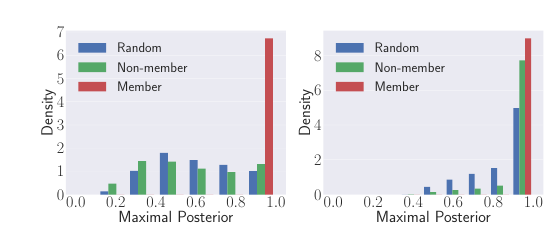
- Members get sharper, more confident outputs
- Highest predicted probability as the score
- Or the gap to the runner-up class
A Theory Anchor
The threshold attack is not a hack. It is provably tied to overfitting.
Yeom et al. (2018)
Loss-threshold advantage grows with the train-test gap. Overfitting is sufficient for leakage, not necessary.
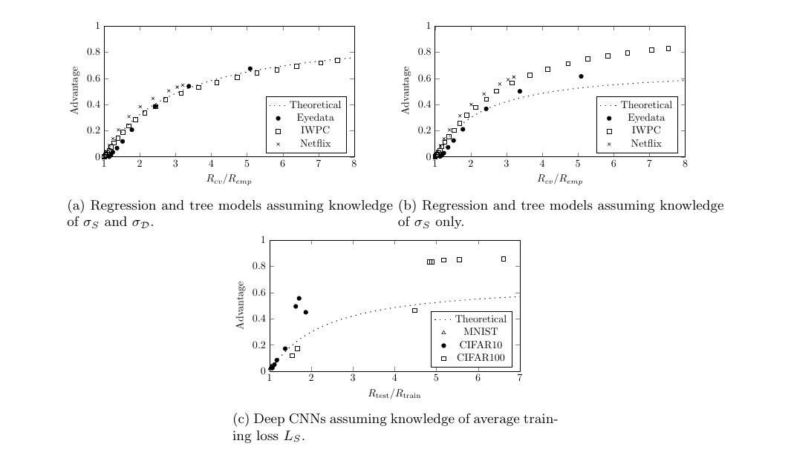
Try It Yourself
Demo
- Train a small classifier on CIFAR-10
- Plot member vs non-member loss histograms
- Sweep $\tau$, watch the accuracy curve
A single Colab cell shows the two bells.
Shadow Models
Train copycats, learn the signal
One Threshold Is Crude
A single global $\tau$ ignores a lot.
- Different classes have different loss scales
- Different inputs are intrinsically easy or hard
- We want a learned decision, not a guess
Can we train the attack itself?
The Shadow Idea
You cannot see the target's members. So build copies you control.
Shadow model
A model trained like the target, on data you own: membership labels are known.
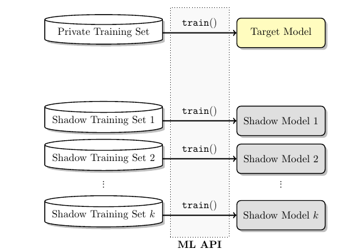
The Shadow Pipeline
Train shadows, collect their outputs, train an attack model on the labels.
Learn the Member Signal
The attack classifier reads an output and predicts in or out.
- Feed shadow outputs labeled in / out.
- It learns what a member's output looks like.
- Apply that learned signal to the target.
The attacker never needed the target's data.
Why It Transfers
Same architecture and task ⇒ same memorization habits.
- Shadows overfit the way the target overfits
- The in-vs-out pattern carries across
- Even with only similar, not identical, data
2017: the attack that opened the field.
Stronger Attacks
Calibrate per-example difficulty
Not All Records Are Equal
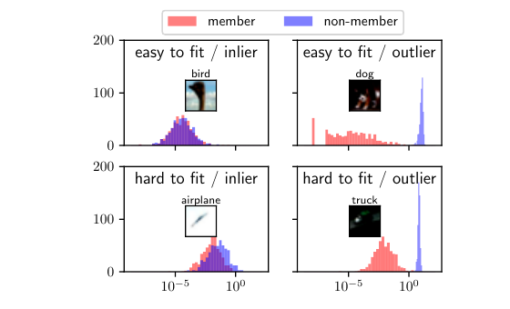
A global threshold misses a key fact.
- Easy records get low loss even as non-members
- Hard records get high loss even as members
- Outliers separate; inliers overlap
- Raw loss confuses difficulty with membership
We must ask: low loss compared to what?
Calibrate Per Example
Ask one sharper question for record $x$.
Is the loss low for this specific $x$, versus models that never saw it?
Compare against $x$'s own baseline, not a global one.
The Likelihood Ratio
Model two worlds for the loss of $x$, then compare them.
- How likely is this loss if $x$ was in training?
- How likely if $x$ was out?
- Their ratio is the membership signal
Estimate both, then judge which world the loss favors.
LiRA: Likelihood Ratio Attack
The strong, practical recipe.
- Train many shadows with $x$ in, many with $x$ out.
- Model each group's loss as a bell curve.
- Score the target by which bell its loss fits better.
Per-example bells, not one global threshold.
Two In-vs-Out Bells
For one record $x$: where does the target's loss land?
Closer to the in-bell ⇒ likely a member.
Label-Only Attacks
What if the model returns only a label, no scores?
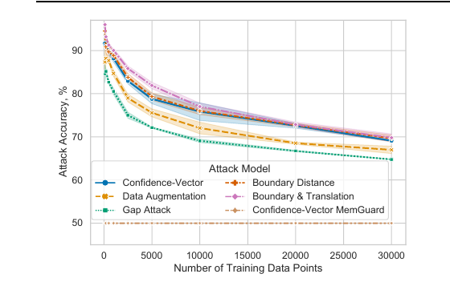
- Perturb $x$, ask if the label still holds
- Members survive more perturbation
- Robustness becomes the membership signal
- Matches confidence-vector attacks on CIFAR-10
Average Accuracy Lies
"55% attack accuracy" sounds harmless.
It hides the danger: a few records leak with near certainty.
The worst case, not the average, is the privacy harm.
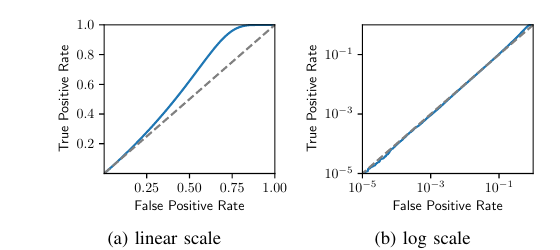
TPR at Low FPR
FPR (False Positive Rate): how often we wrongly cry "member".
- Fix a tiny FPR, like $0.1\%$
- Measure the TPR: how many true members we still catch
- Confident, correct hits are what matter
LiRA wins exactly in this low-FPR regime.
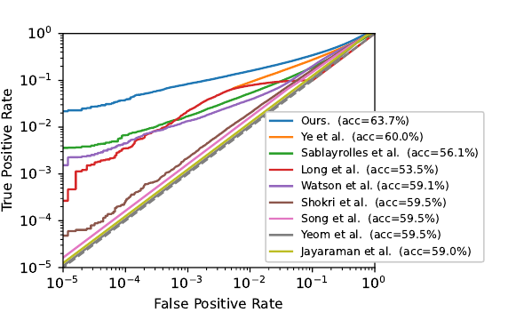
Reading the ROC Tail
Plot true positives against false positives, log scale.
Judge the left edge, where false positives are rare.
What It Means
MIA audits differential privacy
Differential Privacy in One Line
DP (Differential Privacy) bounds how much one record can change the output.
$(\varepsilon, \delta)$-DP
Datasets differing in one person: every outcome shifts by at most $e^{\varepsilon}$, plus slack $\delta$.
DP Caps the Attacker
The same record-swap that DP bounds is what MIA exploits.
A real $\varepsilon$ bound limits any MIA's success, attacker unknown.
DP and membership inference are two sides of one coin.
A Concrete Bound
Under $(\varepsilon,\delta)$-DP, the best attacker's edge is capped.
TPR can exceed FPR by at most a factor $e^{\varepsilon}$, plus slack $\delta$.
Small $\varepsilon$ ⇒ true positives stay near false positives.
Auditing Flips the Attack
Turn the attack into a measurement tool.
- Run the strongest MIA you have.
- Read off its true and false positive rates.
- Back out an empirical $\varepsilon$.
Attack success becomes a privacy meter.
Trust but Verify
The analysis claims an $\varepsilon$. Auditing checks it.
Bug catch
Empirical $\varepsilon$ above the claim means a broken implementation.
Looseness
Empirical $\varepsilon$ far below means a conservative proof.
Privacy auditing is now standard practice.
Auditing in Practice
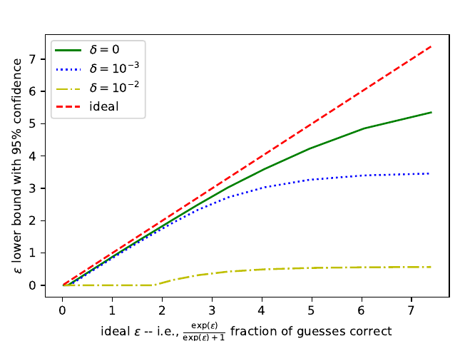
Inject canaries: crafted records easy to detect.
- Train, then attack the canaries
- High detection ⇒ weak privacy
- Recent work audits in one training run
- More correct guesses ⇒ larger provable $\varepsilon$
Cheap enough to run on every model.
Modern Models
LLMs, diffusion, web-scale doubt
MIA Meets Foundation Models
Since 2023, MIA targets LLMs and diffusion models.
Language
Was this article in the LLM's pretraining corpus?
Images
Was this photo in the diffusion model's data?
High stakes for copyright and privacy.
LLM = Large Language Model.
Detecting Pretraining Data
Min-K%: score text by its least likely tokens.
- Members have few very-low-probability tokens
- Average the $k\%$ most surprising tokens
- A high score suggests the text was seen
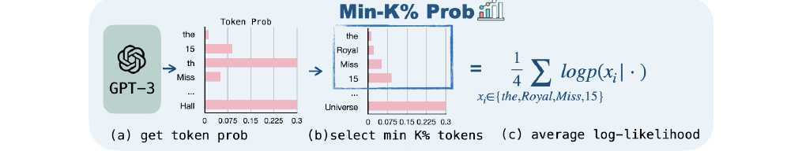
Diffusion Models Too
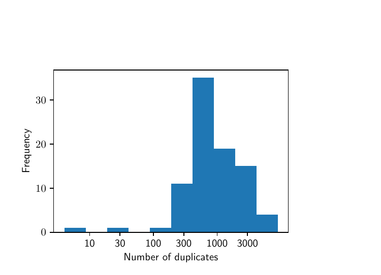
Image generators leave a membership trace.
- Members get lower denoising error
- Duplicated images leak the most
- Same overfitting signal, new domain
Is MIA Well-Posed at Scale?
A 2024 result questions the whole premise.
On true web-scale LLMs, many "attacks" barely beat chance.
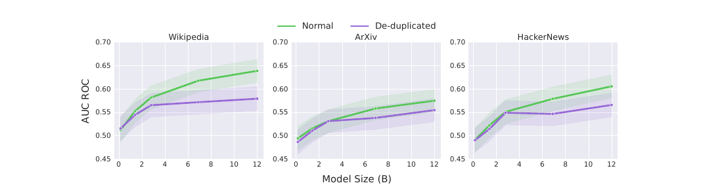
Why Scale Breaks It
Two forces blunt MIA on huge models.
- One epoch over trillions of tokens: little overfit
- Members and non-members overlap in distribution
- "Member" itself gets fuzzy at web scale
Apparent success can be a topic-detector in disguise.
The Benchmark Trap
Many MIA wins came from flawed splits.
- Members: old text. Non-members: post-cutoff, newer text
- The attack learned the date, not membership
- "Blind" date guessers beat published attacks without the model
Always check what your benchmark really measures.
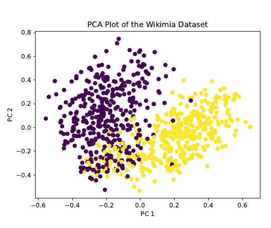
Give the Attack Everything
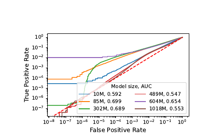
2025: LiRA scaled to LLM pretraining, with over 100 reference models.
- Best-case attacker money can buy
- Beats chance, yet still weak on most records
- Many single records: essentially a coin flip
Even the strongest attack confirms the wall.
Ask About a Dataset, Not a Record
One record is a whisper. A whole collection can be a signal.
- Score every record in the suspect dataset.
- Aggregate the weak signals into one statistical test.
- Answer with a $p$-value: "your dataset was used".
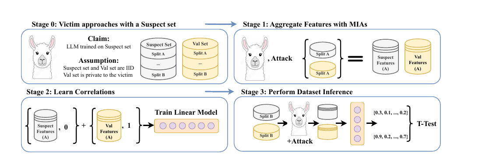
MIA in the Courtroom
Copyright suits ask exactly the MIA question: was our text in training?
A high score is not proof: without a known false-positive rate, it is not evidence.
Membership evidence needs a valid null: an open 2025-26 problem.
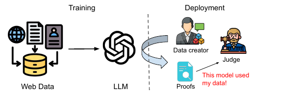
An Open Debate
The field has not settled.
Skeptics
Web-scale MIA mostly measures distribution shift.
Optimists
Rare, fine-tuned, or duplicated data still leaks.
Active, unsettled research as of 2025-26.
Defenses
The privacy-utility price
Shrink the Gap
MIA feeds on overfitting, so reduce overfitting.
Regularize
Weight decay, dropout, label smoothing.
Early stop
Halt before the model memorizes.
More data
Each record matters less.
Heuristics Are Not Proof
Regularization raises the bar, but offers no guarantee.
- A stronger attack may still succeed
- No bound on the worst-case record
- Helpful, not sufficient
For a guarantee, you need DP.
DP-SGD: The Principled Defense
Train with a provable privacy bound.
- Compute each example's gradient.
- Clip it to a maximum length.
- Add Gaussian noise to the sum.
- Step, and track the spent $\varepsilon$.
Why DP-SGD Stops MIA
Clip plus noise limits one record's footprint.
- No single example can dominate a step
- Noise hides whether it was present
- The two worlds blur, by design
Exactly the indistinguishability MIA tries to break.
The Privacy-Utility Cost
Strong defenses cost accuracy. The gap is the price of privacy.
Smaller $\varepsilon$ ⇒ stronger guarantee, larger gap.
The trade-off keeps narrowing with better methods.
A Defender's Checklist
- Measure the train-test gap
- Run a LiRA-style audit before shipping
- Report TPR at low FPR, not just accuracy
- Use DP-SGD when records are sensitive
Attack your own model first.
Key Takeaways
- MIA asks: was this record in training?
- Overfitting leaks it; loss is the simplest score
- LiRA calibrates per example; judge TPR at low FPR
- DP bounds MIA; web-scale MIA is debated
Membership inference is the practical unit test of privacy.
One bit that should stay private.